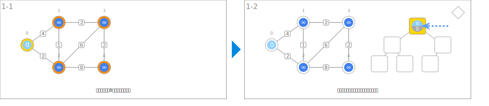
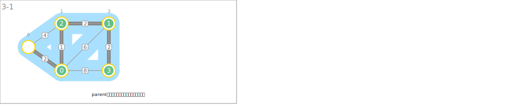

シンボル
| データ | ||
|---|---|---|
 | 始点から各ノードへの暫定最短距離 | dist |
 | ノード番号 | nodeId |
 | 最短経路木における親 | parent |
| ノード間の距離 | weight | |
| 始点を決定 | ||
|---|---|---|
 | 始点の距離を0に初期化します。 | dist[s] ← 0 |
 | その他のノードの距離を大きな値に設定します。 | dist[v] ← INF |
| 最短経路木の構築 | ||
 | ヒープから取り出された最適なノードを指します。 | u |
 | 隣接するノードを訪問して距離を更新します。 | if dist[e.v] > dist[u] + e.weight: dist[e.v] ← dist[u] + e.weight queに(dist[e.v], e.v)を挿入する parent[e.v] ← u |
| 最短経路木の暫定エッジを表します。 | (v, parent[v]) | |
 | 最短経路木を拡張していきます。 | Tに含まれるノード |
| 最短経路木を出力 | ||
 | 親の情報から最短経路木を構築します。 | |
アニメーション
始点を決定

最短経路木の構築

最短経路木を出力
